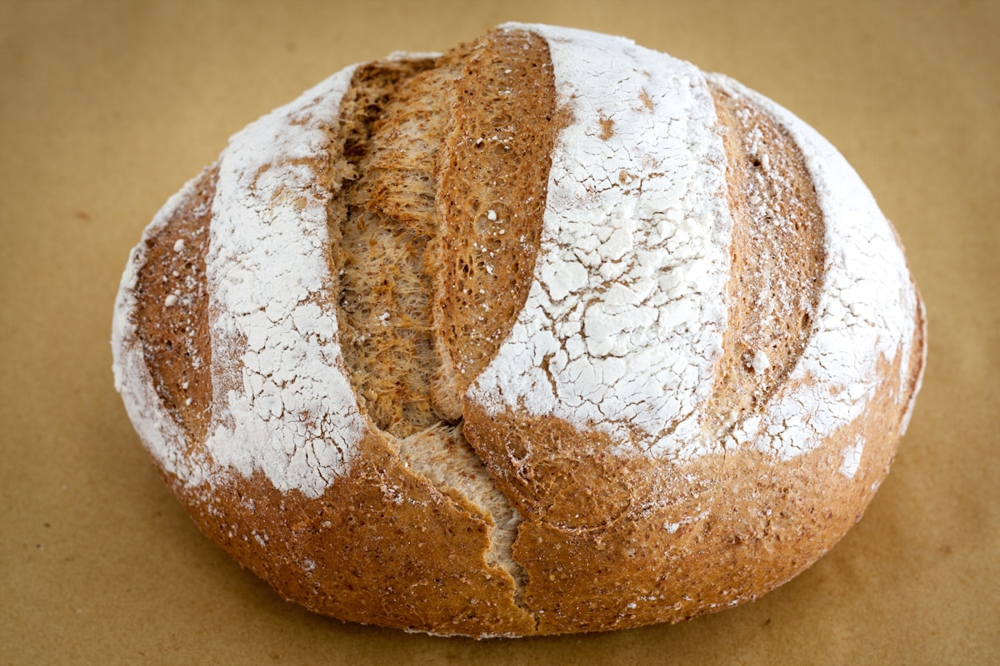

25 years of practical experience in food technology.
KIDEX provides consulting services across wheat and flour processing, bakery products, confectionery and pasta technology.
Two disciplines, one continuous process.
KIDEX DOOEL is a consulting company specialized in the overall technology of wheat and flour processing, bakery products, confectionery and pasta production.
The company has extensive practical experience, with 25 years in these industries and a large number of successful projects with companies in North Macedonia and across the region.
KIDEX participates in fairs, seminars and trainings where it presents its experience, successful projects and innovations in the fields in which it specializes.
Call us and let us make it a success together.

Small process decisions shape the final product.
KIDEX stays close to the ingredients, the method and the people responsible for making the work real.
Close to the ingredient, close to the producer.
Recipes, processes and formulations are only useful if they hold up on a real production line. KIDEX's approach stays grounded in that reality at every stage — from the first look at an existing product to the final specification for a new one.
Understand the product
Starting with how a product performs today — ingredients, process, and the outcome on the shelf.
Work through it together
Advising alongside a producer's own team, rather than delivering a report from a distance.
Land on something usable
A refined recipe, a new formulation, or a process a team can put into production.